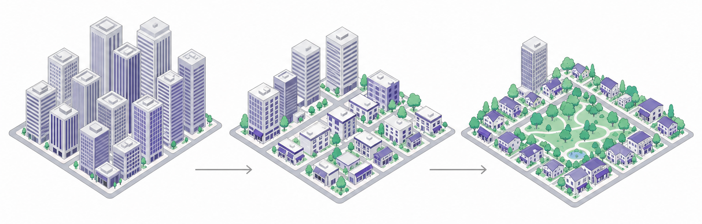

언어 모델은
무엇을 맞히도록 학습되었는가?
답은 하나다 — 다음 토큰. 오늘 나오는 모든 장치는 이 위에 얹힌 것이다.
언어도 시계열이다
시계열 예측을 할 수 있으면 언어를 예측할 수 있겠다 — 그럼 언어에서 한 칸은 무엇인가?
문장을 어떻게 자를 것인가
Tokenizer토크나이저가 바뀌면 모델이 통째로 바뀐다. 번호가 전부 달라지기 때문이다.
한글은 잘게 쪼개진다
직접 넣어 볼 것 — tiktokenizer 류의 사이트같은 내용에 토큰이 더 든다 → 컨텍스트를 더 먹고 비용도 더 든다. 도시 문서가 한글이라는 점이 그대로 비용이 된다.
번호가 몇 번까지 있나
Vocab Size · tiktokenizer.vercel.app 에서 직접 확인할 것다국어를 담으려면 커질 수밖에 없다. 그런데 크게 하면 모델도 커진다 — 그래서 목적에 따라 골라 쓴다.
15만 자리를 몇백 자리로
Embedding — 이미 배운 차원 축소2주차 PCA, 이미지의 오토인코더 와 같은 동작이다 — 차원을 줄여 의미만 남긴다.
순서는 따로 넣어 준다
Positional EncodingRNN 은 한 칸씩 지나가니 순서가 저절로 들어갔다. 한꺼번에 넣는 순간 순서가 사라진다.
시계열을
얼마까지 받나
앞에 책 한 권을 넣을 수도, 대화 두세 번밖에 못 넣을 수도 있다.
늘리면 좋지만 — 가중치 개수와 추론 전력이 함께 늘어난다.
깊이와 관점
덴스 층을 많이 쌓을수록 비선형 관계를 잘 잡던 것과 같다.
주어 중심으로 보는 애, 목적어 중심으로 보는 애, 법률적으로 보는 애.
그 한 층 안에서
벌어지는 일
맨 위에서 임베딩 행렬을 전치해 다시 곱하면 vocab 크기의 벡터가 되고, 소프트맥스가 그걸 확률로 만든다.

어느 시점부터 비공개다
원 하나가 파라미터 수다
Momentum Works, “LLMs are becoming very large indeed”
ELMo 9,400 만 → GPT-2 15 억. 노트북에서 돌려 본 크기다.
GPT-3 1,750 억 · Gopher 2,800 억 · PaLM 5,400 억.
GPT-4 는 공개하지 않았다. 추정치는 돌아다니지만 발표된 값이 아니다.
비용은 거의 전부 하드웨어다
강의에서 든 개략치 — 정확한 시세 아님그냥 꽂으면 동시에 안 돌아간다 — 메모리를 공유하는 링크가 따로 필요하다. 그 비용이 대부분이다.
5년 후에도 직주 접근성의 정의가 같을까?

사무실을 덜 짓는다는 신호가 나온다.
사람 대신 전력과 냉각을 담는 건물이 늘어난다.
전력 인프라부터 용도지역까지 — 무엇을 다시 물어야 하는가.
반대 방향 — 작게, 그리고 몸으로
NPU · 경량화 · Physical AI학습에는 아직 못 쓰고 추론(inference) 에 쓴다 — 전력이 적게 들고 빠르다.
둘 다 “추론” 이지만 다르다
학습이 끝난 모델에 입력을 넣어 토큰 하나를 뽑는 그 계산 전 과정.
뉴럴넷 전반에서 오래 써 온 말이다.
답을 내기 전에 길게 생각하는 과정을 정답지로 삼아 학습시킨 것.
2교시 SFT 에서 자세히 — 같은 프리트레이닝 모델에서 갈라진다.